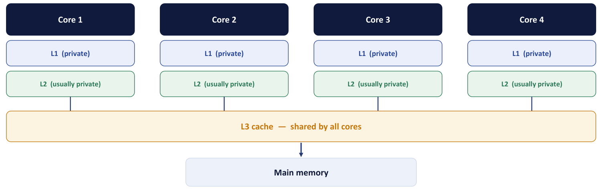
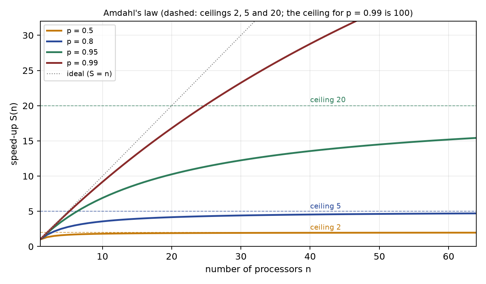
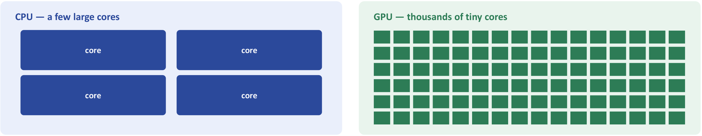

Chapter 17: Multicore Processors and GPUs¶
Why clock speeds stopped rising, how chips became teams of cores, what limits the team, and why a graphics processor is a different kind of machine
For about thirty years a program got faster every year without anyone touching it: the next generation of processor simply had a higher clock. Around 2005 that stopped. The cause was not a lack of transistors but a lack of ability to get the heat out of the chip. Everything in this chapter is a consequence of that one change. Manufacturers stopped chasing frequency and began to put several complete processors, cores, on one chip; performance became something that a program must earn by being parallel, rather than something the hardware delivers for free. That shift moved the burden from the hardware to the software, and it raised a precise question: if a fraction of a program can run in parallel, how much faster can more cores make it? The answer is Amdahl's law, and it is sobering.
The second half of the chapter looks at a processor that took the parallel idea to its extreme. A graphics processing unit (GPU) carries thousands of small, simple cores that all execute the same instruction on different data. It is not a faster CPU; it is a different kind of machine, built for throughput rather than latency, and it is the reason a neural network can be trained in hours instead of weeks. We close by comparing CPU and GPU and by seeing how the two work together in one system. This chapter ends the study of the processor itself; the next unit turns to how such hungry processors are fed with instructions and data through the memory hierarchy and input/output.
What you will learn
- Explain the power wall using dynamic power ∝ C·V²·f, and why it led to multicore.
- Describe the cache organization of a multicore chip: private L1 and L2, shared L3, and the need for cache coherence.
- Classify machines in Flynn's taxonomy.
- State Amdahl's law, compute speedups and ceilings, and work backwards from a measured speedup to the parallel fraction.
- Explain SIMD, SIMT, warps and branch divergence, and how a GPU hides memory latency.
- Compare CPU and GPU in terms of latency and throughput and say which workloads suit each.
17.1 The end of free speed-ups: the power wall¶
For decades processors got faster mainly by raising the clock frequency and by deepening pipelines. The reason this ran into a wall is the physics of CMOS circuits. The dynamic power that a chip dissipates is roughly
where C is the switched capacitance, V the supply voltage and f the clock frequency. Power grows linearly with frequency, but pushing the frequency up also requires a higher supply voltage, and power grows with the square of that voltage. The real cost of more speed therefore rises far faster than the speed itself: a small gain in clock rate buys a large increase in heat. Around 2005 higher clocks meant more power and heat than a chip could dissipate, and clock frequencies stopped rising. This limit is the power wall.
Example 17.1: Why two slow cores can beat one fast core
Problem. Suppose, as an idealised model, that the supply voltage has to scale in proportion to the clock frequency, so that power is proportional to \(f^3\). Compare (a) raising the clock of one core by 30%, with (b) running two cores each at 80% of the original clock.
Working. Let the original core at frequency \(f\) and voltage \(V\) dissipate power 1 and deliver speed 1.
(a) At 1.3 f and 1.3 V: power = \(1.3^3 = 2.2\) times the original, for a speed of 1.3.
(b) Each core at 0.8 f and 0.8 V dissipates \(0.8^3 = 0.512\). Two cores dissipate \(2 \times 0.512 = 1.02\), about the original power. If the work divides perfectly between them the throughput is \(2 \times 0.8 = 1.6\).
Answer. For the price of 2.2 times the power, the faster single core gives 1.3 times the speed; for about the same power as the original, two slower cores give up to 1.6 times the throughput, provided the workload has parallelism to exploit. The assumption \(V \propto f\) is only a model, but it shows the direction of the trade-off.
Two cores at a moderate clock can do more total work than one core at an unreachable high clock, for the same power budget, provided the workload has parallelism to exploit. That proviso is the whole subject of Section 17.5. The consequence students should see is that before 2005 a single-threaded program got faster every year without being touched; after 2005 it did not. A single-threaded program uses one core, so the extra cores sit idle, and what replaced clock speed as the source of performance was explicit parallelism: the program itself has to be written to use several cores.
17.2 Multicore processors¶
A multicore processor is a single integrated circuit that contains two or more independent processing cores. Each core is a complete CPU able to fetch and execute its own instruction stream, with its own control unit, ALU and registers, and usually its own first-level (L1) and often second-level (L2) cache. The cores share the chip's memory system, typically a last-level L3 cache and main memory, and can work on different threads simultaneously, giving thread-level parallelism.
One way to see it is to ask whether you would rather make a single worker inhumanly fast or hire a team and split the job. Past a point the single worker overheats and collapses (literally, for a chip). The team only helps if the job can be split: nine mothers cannot make a baby in one month. Some work is stubbornly sequential, and that sequential fraction is precisely what caps the benefit of more cores.
The advantages of multicore are these: more throughput for the same power; several programs, or several threads of one program, truly run at once; and the interconnect between cores on one chip is shorter than between separate chips. The limitations are equally important: software must be written to run in parallel; the cores compete for shared memory and cache; and the serial part of a program does not speed up at all.
Four cores are not four times as fast
Almost never. Doubling the number of cores doubles the potential throughput only for perfectly parallel work with no shared bottlenecks. Real programs have a serial part, plus overheads from synchronisation, cache-coherence traffic and memory bandwidth. Amdahl's law (Section 17.5) shows that even an 80%-parallel program tops out at 5 times no matter how many cores you add. More cores help; they do not multiply speed linearly.
17.3 Private and shared caches¶
Each core typically has its own private L1 cache, and often its own L2, for speed; a larger shared L3 cache is common to all cores and connects to main memory (Figure 17.1).

The two kinds of cache exist for different reasons. Private caches are small and fast, and they avoid contention: no other core can slow yours down. The shared cache is large, lets cores exchange data without going to main memory, and allocates its capacity flexibly to whichever core needs it.
| Cache | Scope | Purpose and trade-off |
|---|---|---|
| L1 (private) | one core | smallest and fastest; no sharing contention |
| L2 (often private) | one core (sometimes a pair) | larger than L1; still low latency |
| L3 (shared) | all cores | large; enables data sharing between cores; needs coherence |
Private caches have a price. Copies of the same memory block may sit in several private caches at once. If core 1 writes to its copy, core 2 must not go on reading a stale value. Hardware protocols keep every core's view consistent; this is called cache coherence, and the coherence traffic is itself one of the overheads that stop N cores giving N times the speed. Because all cores see one address space, they communicate by reading and writing the same memory, and access must be coordinated (with locks) to keep shared data consistent.
17.4 Flynn's classification¶
Flynn classified computers by how many instruction streams and how many data streams are processed at the same time. It is the vocabulary used to describe both multicore processors and GPUs.
| Class | Meaning | Example |
|---|---|---|
| SISD | single instruction, single data: one processor, one program, one datum at a time | the basic computer; a classic uniprocessor (pipelined or not) |
| SIMD | single instruction, multiple data: one operation applied to many data items at once | vector processors, SSE and AVX instructions, GPUs |
| MISD | multiple instructions, single data | no practical commercial machine; fault-tolerant voting systems |
| MIMD | multiple instructions, multiple data: independent processors, each with its own program and data | multicore processors, multiprocessors, clusters |
A multicore processor is MIMD with shared memory. Two shorthand terms help: multicore processors exploit thread-level parallelism (TLP), where independent threads run on different cores; GPUs and SIMD units exploit data-level parallelism (DLP), where one operation is applied to many data items.
17.5 Amdahl's law¶
Adding cores speeds up only the part of a program that can use them. The rest takes exactly as long as it always did.
Take the time on one processor as 1. Suppose a fraction \(p\) of the work can be done in parallel and the remaining \(1 - p\) is inherently serial. On \(n\) processors the serial part still costs \(1 - p\), while the parallel part costs \(p/n\). The speedup is the old time divided by the new time:
There is nothing to memorise beyond that sentence. The parallel part can be made to take almost no time at all, but the serial part never shrinks. Whatever fraction is stubbornly sequential sets a ceiling that no amount of hardware can break through.
| Parallel fraction p | n = 2 | n = 4 | n = 8 | n = 16 | ceiling \(n \to \infty\) |
|---|---|---|---|---|---|
| 0.50 | 1.33 | 1.60 | 1.78 | 1.88 | 2 |
| 0.75 | 1.60 | 2.29 | 2.91 | 3.37 | 4 |
| 0.80 | 1.67 | 2.50 | 3.33 | 4.00 | 5 |
| 0.90 | 1.82 | 3.08 | 4.71 | 6.40 | 10 |
| 0.95 | 1.90 | 3.48 | 5.93 | 9.14 | 20 |
| 0.99 | 1.98 | 3.88 | 7.48 | 13.9 | 100 |
Read the first row and be sobered: a program that is half parallel can never exceed 2 times, even on a thousand cores. Software engineering that reduces the serial fraction matters more than buying more cores. Figure 17.2 plots the same law: each curve bends away from the ideal straight line S = n and flattens towards its ceiling.

Remember the assumptions. Amdahl's law ignores communication, synchronisation and memory-bandwidth costs, so real speedups are lower than the table. It is an optimistic upper bound.
Serial fraction against parallel fraction
The commonest mistake is to read p as the serial fraction. "25% of the time is spent in code that cannot be parallelised" means \(1 - p = 0.25\), so \(p = 0.75\). Write both numbers down before you substitute.
Example 17.2: Speedup on 4 processors, on 16, and at best
Problem. A program spends 25% of its time in code that cannot be parallelised. Find the speedup on 4 processors and on 16, and the maximum possible speedup.
Working. The serial fraction is \(1 - p = 0.25\), so \(p = 0.75\).
- \(n = 4\): \(S = 1/(0.25 + 0.75/4) = 1/(0.25 + 0.1875) = 1/0.4375 = 2.29\).
- \(n = 16\): \(S = 1/(0.25 + 0.046875) = 1/0.296875 = 3.37\).
- \(n \to \infty\): \(S = 1/0.25 = 4\).
Answer. 2.29, 3.37 and a maximum of 4. Quadrupling the processors from 4 to 16 buys only \(3.37/2.29 - 1 = 47\%\) more speed, which is why engineers attack the serial part rather than the core count.
Example 17.3: An 80% parallel program
Problem. A program is 80% parallelisable (\(p = 0.8\)). Find the speedup with 4 cores and the theoretical maximum with infinitely many cores.
Working. With \(n = 4\): \(S = 1/(0.2 + 0.8/4) = 1/(0.2 + 0.2) = 1/0.4 = 2.5\). As \(n \to \infty\): \(S \to 1/(1 - 0.8) = 1/0.2 = 5\).
Answer. About 2.5 times with 4 cores; at most 5 times however many cores are added.
Example 17.4: Where should you spend your effort?
Problem. Two teams optimise the same 80%-parallel program. Team A buys a 16-core machine. Team B rewrites the algorithm so that 95% is parallel but runs it on only 4 cores. Whose program is faster? What does this tell you?
Working. Team A: \(p = 0.8\), \(n = 16\): \(S = 1/(0.2 + 0.8/16) = 1/(0.2 + 0.05) = 1/0.25 = 4.0\). Team B: \(p = 0.95\), \(n = 4\): \(S = 1/(0.05 + 0.95/4) = 1/(0.05 + 0.2375) = 1/0.2875 = 3.5\).
Answer. Team A is at 4.0 and Team B at 3.5 today, but the two are close: four cores plus a better algorithm nearly match sixteen cores. And Team A is already near its own ceiling, 5 times with infinite cores, while Team B's ceiling is 20 times. Shrinking the serial fraction eventually beats piling on cores; once the ceiling is reached, more hardware is wasted money.
Example 17.5: Eight cores at 90%
Problem. A program is 90% parallel. Find the speedup on 8 cores and the theoretical ceiling.
Working. \(S = 1/(0.1 + 0.9/8) = 1/(0.1 + 0.1125) = 1/0.2125 = 4.71\). The ceiling is \(1/(1 - 0.9) = 10\).
Answer. About 4.7 times on 8 cores; at most 10 times. Eight cores deliver less than half of the ceiling, and 16 would still give only 6.4.
Example 17.6: Working backwards to the parallel fraction
Problem. A program achieves a speedup of 3 on 4 cores. What fraction of it is parallel?
Working. From \(S = 1/((1-p) + p/n)\) we get \((1 - p) + p/n = 1/S\), so \(1 - p(1 - 1/n) = 1/S\) and
With \(S = 3\), \(n = 4\): \(p = (1 - 1/3)/(1 - 1/4) = (2/3)/(3/4) = 8/9 = 0.889\).
Answer. About 89% of the program is parallel. Check: \(1/(0.1111 + 0.8889/4) = 1/(0.1111 + 0.2222) = 3\).
Example 17.7: A vendor's claim
Problem. A vendor advertises a new 32-core chip as "8 times faster" than the old 4-core chip, the figure one gets from the ratio of the core counts. A customer measures only about 3 times speedup for their workload on 32 cores, relative to running it on one core. Estimate the parallel fraction \(p\) and advise what to invest in next.
Working. Use the formula of Example 17.6 with \(S = 3\) and \(n = 32\): \(p = (1 - 1/3)/(1 - 1/32) = (2/3)/(31/32) = 0.688\). The ceiling is \(1/(1 - p) = 3.2\), so the program is already at 3.0 of a possible 3.2. Doubling the cores to 64 gives only \(S = 1/(0.312 + 0.688/64) = 3.10\). If instead the serial part were halved, from 31% to 15.6% (\(p = 0.844\)), the same 32 cores would give \(S = 1/(0.156 + 0.844/32) = 5.5\), with a ceiling of 6.4.
Answer. \(p \approx 0.69\) (the exact answer depends on how the measured figure is defined; any reading of "about 3 times" gives roughly 0.68 to 0.70). The serial fraction of about 30% dominates, so more cores buy almost nothing; invest in reducing the serial part. The "8 times" claim assumes perfect scaling, that is \(p = 1\).
17.6 Graphics processing units¶
A graphics processing unit was originally a specialised processor for rendering images, where the same operation is applied to millions of pixels or vertices. That regular, data-parallel workload led to a design very different from a CPU. Instead of a few powerful cores, a GPU packs thousands of small, simple cores, organised so that a group of them executes the same instruction on different data (Figure 17.3). Because that pattern is common in science, simulation and especially deep learning, GPUs are now used as general throughput engines; this use is called GPGPU.

A good picture: a CPU is a Formula One car, blisteringly fast for one passenger and able to weave through any twisty route (branchy, unpredictable code). A GPU is a fleet of buses: each bus is slower, but together they move thousands of passengers who are all going the same way. If your problem is "apply the same operation to a million pixels, matrix elements or training examples", the bus fleet wins by a landslide. If it is "make one urgent, unpredictable trip", you want the sports car. That is the whole latency-against-throughput story in one image.
SIMD and SIMT¶
In Flynn's taxonomy a GPU is a SIMD machine: one instruction operates on many data elements at once. NVIDIA calls its refinement SIMT, single instruction, multiple threads: a group of threads, a warp (typically 32 threads; AMD's equivalent is a wavefront of 32 to 64), executes the same instruction in lock-step, each thread on its own data. Figure 17.4 shows the idea: one MUL instruction is issued once and carried out by every thread of the warp.
How a GPU hides memory latency. A CPU hides slow memory with large caches and out-of-order execution. A GPU does it differently: when one warp stalls waiting for memory, the scheduler instantly switches to another warp that is ready. With thousands of threads resident, there is almost always something to run, so the arithmetic units stay busy. The GPU therefore has small caches but very wide memory buses, and it hides latency by thread switching rather than by caching.
Branch divergence. All threads in a warp share one program counter. If some threads take the if branch and the rest take the else branch, the warp must execute both paths, one after the other, masking off the threads that should not participate. A warp that diverges 32 ways runs 32 times slower. This is the GPU's weak spot, and the reason branchy code is poison on a GPU.
Example 17.8: The cost of divergence
Problem. A warp of 32 threads executes if (x > 0) A else B, where A and B each take 10 cycles. How long does the warp take if (a) all threads have x > 0, (b) half the threads have x > 0 and half do not, (c) every thread takes a different one of 32 different paths of 10 cycles each?
Working. (a) Every thread takes branch A, and B is skipped: 10 cycles. (b) The warp runs A with half the threads masked off, then B with the other half masked off: 10 + 10 = 20 cycles, twice as long for the same useful work. (c) The 32 paths run one after the other: 32 × 10 = 320 cycles, 32 times slower.
Answer. 10, 20 and 320 cycles. The more the threads of a warp disagree, the more of the machine sits idle.
Example 17.9: Why matrix multiplication suits a GPU
Problem. Multiplying two 1024 × 1024 matrices needs how many multiply-add operations, and how much of this is parallel?
Working. Each of the \(1024 \times 1024 = 1\,048\,576\) elements of the result is a dot product of 1024 pairs, so there are \(1024^3 = 1\,073\,741\,824\), about \(10^9\), multiply-adds. The element results are independent of one another, and every thread executes the same multiply-add sequence on different data, with no branching.
Answer. About a billion multiply-adds, all of the same form and nearly all independent: exactly the SIMT shape. Training a neural network is, at heart, a torrent of such matrix multiplications.
17.7 CPU and GPU: latency against throughput¶
A CPU is a latency-oriented device. A few complex cores, with large caches, deep pipelines and sophisticated branch prediction, aim to finish one thread as quickly as possible. A GPU is a throughput-oriented device: many simple cores devote their transistors to arithmetic rather than to caches and control logic, aiming to finish as many parallel threads as possible per unit time. A single GPU thread is usually slower than a CPU thread.
| Aspect | CPU | GPU |
|---|---|---|
| Design goal | low latency for one or a few threads | high throughput for very many threads |
| Number of cores | few (typically 4 to 64), each complex | thousands, each simple |
| Execution model | MIMD: each core has its own program | SIMD or SIMT: a group shares one instruction |
| Cache and control | large caches, heavy control logic, branch prediction | small caches; most chip area is ALUs |
| Latency hiding | caches and out-of-order execution | fast switching among many resident warps |
| Best for | serial, branchy, latency-sensitive code (the operating system, control logic) | massively data-parallel work: graphics, matrices, deep learning |
GPUs are not "just faster CPUs". A heavily branchy or sequential program runs badly on a GPU, and a GPU wins only when the work is massively data-parallel and uniform. That is why we do not simply replace CPUs with GPUs: each is built for the workload that the other is bad at. The standard contrast in a question is multiplying two large matrices (far better on a GPU: the same multiply-accumulate applied to millions of independent elements) against walking a linked list (far worse: each step depends on the previous one, so there is nothing to do in parallel, and the GPU's slow individual cores lose to the CPU's fast one).
In practice the two work together. The CPU runs the operating system and the serial parts of a program (the host) and offloads the massively parallel parts to the GPU (the device). This is heterogeneous computing: the CPU handles control, the GPU handles bulk data parallelism. A single modern GPU can train a neural network model 10 to 50 times faster than a high-end CPU, and the whole deep-learning revolution rode in on graphics hardware that was originally designed to shade triangles in video games.
17.8 Summary¶
Key points
- Dynamic power is roughly C·V²·f; raising f also needs a higher V, so power and heat grow far faster than speed. Around 2005 this power wall stopped clock frequencies rising and drove the move to multicore.
- A multicore processor puts several complete cores on one chip, each with private L1 (and usually L2) caches, sharing an L3 cache and main memory. Cache coherence keeps the private copies consistent.
- Flynn: SISD (classic CPU), SIMD (vector units and GPUs), MISD (rare), MIMD (multicore processors).
- Amdahl's law: S(n) = 1 / ((1 − p) + p/n), with ceiling 1/(1 − p). The serial fraction, not the number of cores, decides the ceiling. Write p and 1 − p down before substituting. It is an optimistic upper bound.
- A GPU has thousands of simple cores that execute SIMD or SIMT warps in lock-step, hides memory latency by switching warps, and suffers from branch divergence. It is throughput-oriented, while a CPU is latency-oriented.
- The CPU (host) runs the operating system and serial code and offloads data-parallel work to the GPU (device).
| Topic | Rule |
|---|---|
| Dynamic power | \(P \approx C V^2 f\) |
| Amdahl | \(S = 1/((1-p) + p/n)\); ceiling \(1/(1-p)\); \(p = (1 - 1/S)/(1 - 1/n)\) |
| Examples | p = 0.8, n = 4: 2.5, ceiling 5; p = 0.9, n = 8: 4.71, ceiling 10; p = 0.75, n = 4, 16: 2.29, 3.37, ceiling 4 |
| TLP / DLP | multicore exploits thread-level, GPU data-level parallelism |
| Warp | group of (typically 32) GPU threads that execute in lock-step; AMD's wavefront |
| CPU | few complex cores, MIMD, low latency, large caches, branchy code |
| GPU | thousands of simple cores, SIMD or SIMT, high throughput, small caches, data-parallel code |
17.9 Exercises¶
Exercise 17.1. (a) Explain the power wall and why it drove the shift to multicore processors. (b) Why did clock speeds stop rising around 2005, and what replaced clock speed as the source of performance?
Answer
(a) Dynamic power is roughly C·V²·f; raising f also requires a higher V, so power and heat grow much faster than speed, until a chip cannot dissipate the heat. Several cores at a moderate clock can do more total work than one core at an unreachable clock for the same power, provided the workload is parallel. (b) The limit was power and heat, which grow with the square of the voltage needed for a higher clock. Explicit parallelism replaced clock speed: the program itself must be written to use several cores, which moved the burden from hardware to software.
Exercise 17.2. (Multiple choice) The main reason processors moved to multicore designs was: (A) the power wall limiting clock frequency (B) lack of transistors (C) to reduce the register count (D) to remove the need for caches.
Answer
A. Power and heat capped the clock frequency.
Exercise 17.3. (Scenario) Two cores of a multicore chip each hold a copy of the same variable in their private L1 caches, and one core writes it. Which mechanism stops the other core from later reading a stale value: register windowing, cache coherence, branch prediction or autoincrement?
Answer
Cache coherence: hardware keeps copies of a memory block consistent across the cores' private caches.
Exercise 17.4. A program is 50% inherently serial. Whatever the number of cores, its speedup can never exceed: 2, 4, 8 or unbounded?
Answer
- The ceiling is 1/(1 − p) = 1/0.5 = 2.
Exercise 17.5. State Amdahl's law as a formula for the speedup with parallel fraction p on N cores, and say what happens as N tends to infinity.
Answer
\(S = 1/((1 - p) + p/N)\). As \(N \to \infty\) the speedup tends to \(1/(1 - p)\), the ceiling set by the serial fraction.
Exercise 17.6. A program spends 25% of its time in code that cannot be parallelised. Find the speedup on 4 and on 16 processors and the maximum possible speedup.
Answer
\(p = 0.75\). On 4 processors \(S = 1/(0.25 + 0.1875) = 2.29\). On 16, \(S = 1/(0.25 + 0.046875) = 3.37\). The maximum is \(1/0.25 = 4\).
Exercise 17.7. A program is 90% parallelisable. Find the speedup on 8 cores and the maximum possible speedup.
Answer
\(S = 1/(0.1 + 0.9/8) = 1/0.2125 = 4.7\). Maximum \(1/0.1 = 10\).
Exercise 17.8. 80% of a program is parallelisable. Find the speedup on 2, 8 and 32 processors, and the maximum.
Answer
\(p = 0.8\), serial 0.2. \(n = 2\): \(1/(0.2 + 0.4) = 1.67\). \(n = 8\): \(1/(0.2 + 0.1) = 3.33\). \(n = 32\): \(1/(0.2 + 0.025) = 4.44\). Maximum \(1/0.2 = 5\).
Exercise 17.9. A program is 60% parallelisable. What is the maximum speedup on 4 cores, and with infinitely many?
Answer
\(p = 0.6\). On 4 cores \(S = 1/(0.4 + 0.15) = 1/0.55 = 1.82\). With infinitely many, \(1/0.4 = 2.5\), the ceiling set by the 40% that stays serial.
Exercise 17.10. A program achieves a speedup of 3 on 4 cores. What fraction of it is parallel?
Answer
\(3 = 1/((1 - p) + p/4)\) gives \((1 - p) + 0.25p = 1/3\), so \(1 - 0.75p = 0.3333\) and \(p = 0.889\): about 89% of the program is parallel.
Exercise 17.11. Team A runs an 80%-parallel program on 16 cores. Team B reworks the algorithm to be 95% parallel and runs it on 4 cores. Compute each team's speedup and each team's ceiling, and say what the comparison teaches.
Answer
A: \(1/(0.2 + 0.05) = 4.0\), ceiling 5. B: \(1/(0.05 + 0.2375) = 3.48 \approx 3.5\), ceiling 20. A is slightly ahead today, but B has far more headroom. Reducing the serial fraction is the more durable win; more cores soon hit the ceiling.
Exercise 17.12. A customer measures a speedup of about 3 on a 32-core chip (relative to one core) whereas the vendor advertised an ideal 8-fold gain over a 4-core chip. Estimate the parallel fraction, and say what to invest in next.
Answer
\(p = (1 - 1/3)/(1 - 1/32) \approx 0.69\). The ceiling is \(1/(1 - p) \approx 3.2\), so the program is close to it already; the serial fraction of about 31% dominates. Reduce the serial part (rewrite the algorithm) instead of adding cores: halving the serial fraction would raise the 32-core speedup to about 5.5.
Exercise 17.13. Classify each in Flynn's taxonomy: (a) a classic single-core uniprocessor, (b) a GPU executing one instruction on a warp of threads, (c) a four-core processor running four different programs, (d) a fault-tolerant system in which several units process the same input.
Answer
(a) SISD. (b) SIMD (SIMT). (c) MIMD. (d) MISD, the rare class in which different instruction streams work on a single data stream (voting systems).
Exercise 17.14. Write three differences between a GPU and a CPU, as a table of matched pairs.
Answer
| CPU | GPU | |
|---|---|---|
| Cores | few (4 to 64), each complex | thousands, each simple |
| Optimised for | latency: finish one task fast | throughput: finish many tasks per second |
| Execution model | MIMD: each core runs its own program | SIMD or SIMT: a group shares one instruction |
(Any three rows will do; other rows are cache and control logic, and what each is best at.)
Exercise 17.15. List three characteristics of a GPU and name one kind of task it performs better than a CPU.
Answer
Massively parallel (thousands of lightweight cores); SIMT execution (one instruction issued to a whole group of threads, each on its own data); very high memory bandwidth with latency hidden by switching between many resident threads rather than by large caches. It beats a CPU on data-parallel work such as multiplying large matrices, shading pixels, filtering images or training neural networks. It is not faster at anything sequential, and a single GPU core is slower than a CPU core.
Exercise 17.16. Training a deep neural network consists mostly of enormous matrix multiplications with almost no branching. (a) Explain why this runs much faster on a GPU than on a high-end CPU. (b) Name one task for which you would still prefer the CPU. (c) What is branch divergence, and why does it hurt a GPU?
Answer
(a) Matrix multiplication is uniform and data-parallel: thousands of SIMT threads run the same multiply-add on different elements, and the GPU hides memory latency by switching warps, giving huge throughput, whereas a CPU has only a handful of cores. (b) Serial, branchy, latency-sensitive work such as the operating system, control logic or walking a linked list. (c) When threads of one warp take different branches the warp must execute both paths serially, with the non-participating threads masked off, so their work is wasted.
Exercise 17.17. A warp of 32 threads executes if (x > 0) A else B, with A and B each taking 8 cycles. How long does it take if (a) all threads take A, (b) the warp splits half and half?
Answer
(a) 8 cycles (B is skipped). (b) A then B, with half the threads masked in each: 8 + 8 = 16 cycles, twice as long.
Exercise 17.18. (Fill in the blank) (a) In NVIDIA GPUs a group of typically 32 threads that execute the same instruction in lock-step is called a _. (b) The CPU that runs the operating system and the serial parts of a program is called the _ and the GPU the __.
Answer
(a) A warp (AMD's equivalent is a wavefront). (b) The host; the device.
Exercise 17.19. (True/false) (a) Doubling the number of cores always doubles a program's speed. (b) A single GPU thread is usually faster than a CPU thread. (c) In a multicore processor the L3 cache is typically shared by all cores while L1 is private. (d) Amdahl's law gives an upper bound that real programs seldom reach.
Answer
(a) False: the serial fraction limits speedup. (b) False: a GPU wins by running thousands of threads, not by speed per thread. (c) True. (d) True: it ignores communication, synchronisation and memory-bandwidth costs.
Exercise 17.20. (Self-test) A program is 90% parallel. Find the speedup on 8 cores and the theoretical ceiling, and then give three characteristics of a GPU and one workload it beats a CPU on.
Answer
\(S = 1/(0.1 + 0.9/8) = 4.7\) and the ceiling is 10. A GPU has thousands of simple cores, SIMT execution, and very high memory bandwidth with latency hidden by switching threads; it beats a CPU on matrix multiplication, image processing or neural-network training.